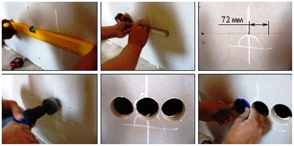
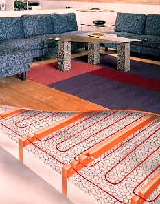

Качественный электромонтаж в Санкт-Петербурге и ленобласти, стаж 12 лет. Частный электрик, недорого и качественно.
Тел. 8 904 642 08 57 Николай.
Николай.

Электромонтер, частный мастер в СПБ и в Ленинградской обл..
Профессия электромонтер.
Давайте знакомиться. Я профессиональный электрик с высшим электротехническим образованием. Вместе с частной бригадой профессиональных электриков готов оказывать помощь в решении проблем связанных с электропроводкой, щитом, автоматикой, различными установками.
Вызов Электромонтера на дом.
Давайте рассмотрим самые популярные способы, когда может быть вызван электромонтер на дом. Его можно найти на специализированных интернет площадках. У вас вполне может быть знакомый электрик или можно написать заявление в ЖЭК. Казалось бы, ничего сложного, но электромонтер на дом может не обладать достаточной квалификацией либо не прийти в назначенное время. Весь наш коллектив состоит из технических специалистов, электромонтеров, монтажников, которые имеют специальные допуски на осуществление работ. Услуга электромонтер на дом сегодня довольно востребована, так как потребление электроэнергии увеличивается из года в год.
Услуги Электромонтера.

Электромонтер на дом по первому звонку оперативно выедет к месту проведения работ и составит предварительную смету. Основными позициями наших услуг являются:
- штробление стен;
- установка и перенос розеток, приборов, выключателей;
- установка защитных агрегатов и установок;
- разработка электротехнических проектов любой сложности;
Установка осветительных приборов: бра, светильников и люстр.
Независимо от конфигурации потолков и их высоты, наши специалисты грамотно организуют освещенность всех помещений. Будут учтены мощность приборов, типы источников света.
Правильное освещение играет огромную роль в жизни каждого человека. С помощью услуги электромонтер на дом можно заказать монтаж светильников внутреннего и наружного освещения. Обладатели загородного жилья стремятся к максимальному комфорту, в том числе за счет организации ландшафтного и архитектурного освещения. Проведение работ начинается с демонтажа старого оборудования. После этого осуществляется прокладка силовых кабелей и шкафов управления. Последний этап – монтаж осветительных приборов и сдача готового проекта. Освещение внутри помещений в зависимости от интерьера может быть простым и сложным.
Уличное освещение.
Электромонтер на дом совместно с другими мастерами поможет выбрать наиболее подходящую световую композицию, среди которых такие виды подсветок, как:
- скрытая;
- заливающая;
- локальная;
Процесс монтажа уличных приборов несколько сложен, так как нужно осуществить прокладку опор для приборов, монтаж элементов правления и других. Наружное освещение более затратное, но благодаря последовательности и слаженности действий нашей бригады все работы пройдут быстро, а главное правильно. Электромонтер на дом составит проект и смету. Далее будут осуществлены земляные работы и укладка силовых кабелей. Последний этап: монтаж приборов и изоляция всех подключений. Владельцу загородного дома остается сделать пару щелчков выключателем и насладится уютной обстановкой.
Промышленные объекты.
Заказав услугу электромонтера на дом, можно быть уверенным в качественном проведении работ. Но мы не ограничиваемся только частным сектором. Промышленные цеха, хранилища и склады, также являются сферой приложения усилий. Разрабатывая проекты освещения промышленных и коммерческих организаций, следует учесть следующие параметры:
- экономность оборудования;
- высокое качество приборов;
- высокий КПД;
- безопасность осветительного оборудования;
Электромонтер на дом: удобно, экономно, квалифицированно.
Если вам нужен электромонтер на дом, то вы обратились по адресу. Заменить розетки, установить новый выключатель, демонтировать старое оборудование – эти и многие другие работы будут осуществлены в срок и по приемлемым ценам.
В быту нельзя обойтись без такого элемента декора, как выключатели. Кто, если не электромонтер на дом может провести монтаж проводки открытого либо закрытого типа.
Для повышения электробезопасности дома и на рабочем месте электромонтер на дом осуществит замену устаревшего оборудования на новый автомат и УЗО. Сегодня установка устройство защитного отключения является необходимостью, так как в случае возникновения опасности УЗО обесточит цепь.
Установка и монтаж электрического счетчика.
Эксплуатационный срок старых электрических счетчиков завершен, поэтому следует производить замену на новые. Современные бытовые приборы потребляют немало электроэнергии. Наш электромонтер на дом профессионально установить счетчик нового образца, который одобрен гос. энергонадзором. Стоимость установки зависит от типа счетчика. Монтаж трехфазного аппарата обойдется собственнику в сумму до 800 руб., а двухфазного – 500 руб.
Что касается цен на замену всей проводки, то она зависит от площади помещений. Например, усредненная стоимость замены проводки в однокомнатной квартире варьируется от 10000 руб.
Штробление стен и демонтаж оборудования.
Даже санный модный дизайн интерьера может быть испорчен наружной электропроводкой. Профессиональный электромонтер на дом сделает скрытую проводку в соответствии с общим стилевым решением жилища. Но для осуществления задуманного необходимо штробление стен. Имея специальные индикаторы, электромонтер на дом обследует стены на наличие напряжения, только после этого начнет прокладку трассы штробы. Любые стены: бетонные, монолитные, кирпичные, будут аккуратно проштроблены с соблюдением необходимых условий. Случаются ситуации, когда электромонтер на дом востребован в вне рабочее время. Вызов мастера в аварийных ситуациях, у которого с собой имеется необходимый набор инструментов избавит вас от лишних хлопот. Помимо электромонтажных работ, наш специалист со знанием дела установит и отремонтирует при необходимости бытовую технику. Электрики 4-ого уровня доступа предоставят бесплатную консультацию по вопросам выбора материалов и комплектующих. Важный момент: на все виды электромонтажных работ, вне зависимости от их сложности будет предоставлена гарантия.
.
 Поменять проводку в квартире.
Поменять проводку в квартире. Сколько будут стоить материалы.
Электрика в загородном доме стоимость работ.

Замена электропроводки в панельном доме.
Расценки на электропроводку квартир.
Замена проводки в хрущевке.
Электромонтаж в частном доме.
Электрика в загородном доме.
Сколько стоит замена электропроводки в двухкомнатной квартире?.
Электрик в новостройку однокомнатная квартира недорого.

Сколько стоит поменять электропроводку в 3-х комнатной квартире.